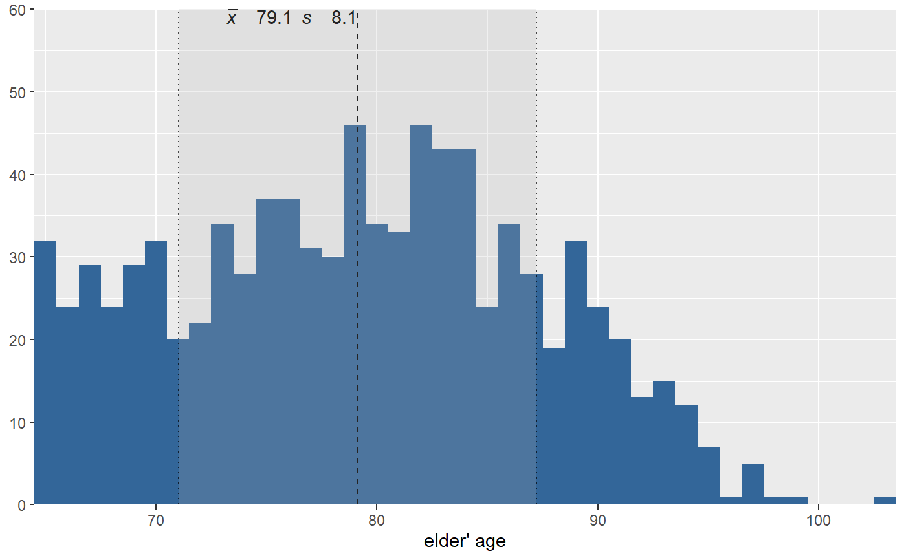
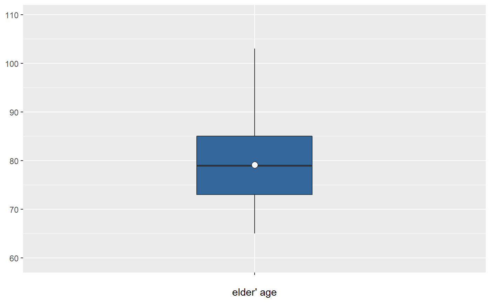
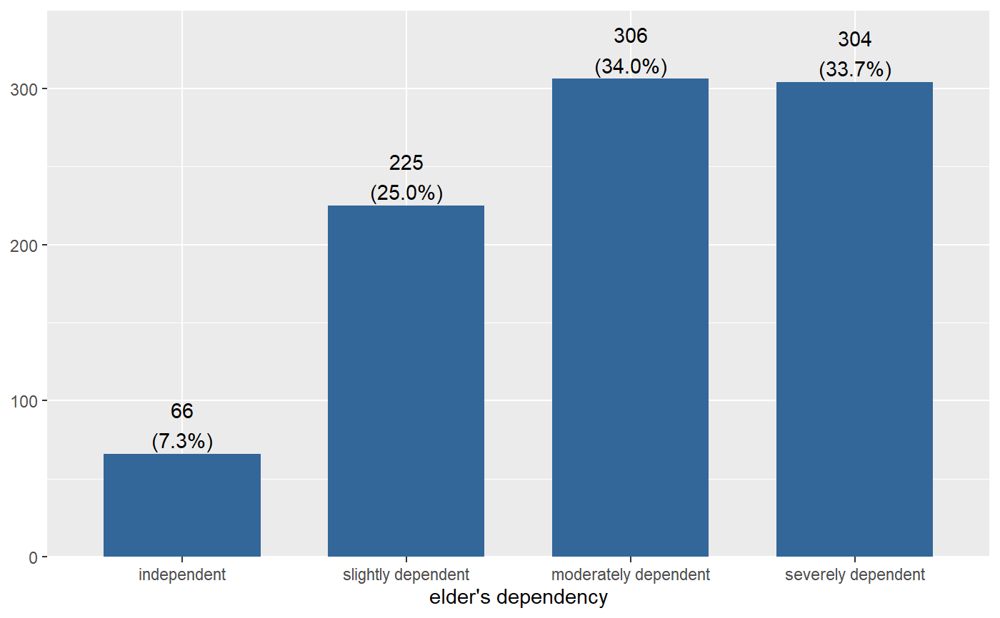
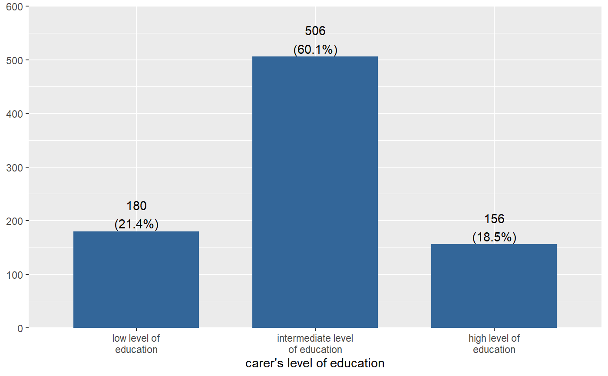
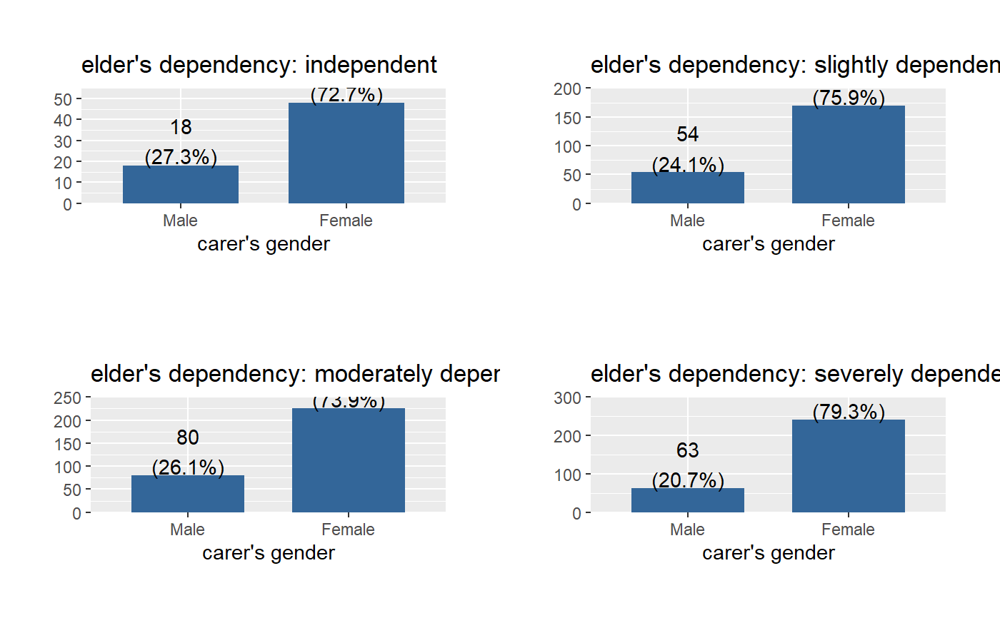
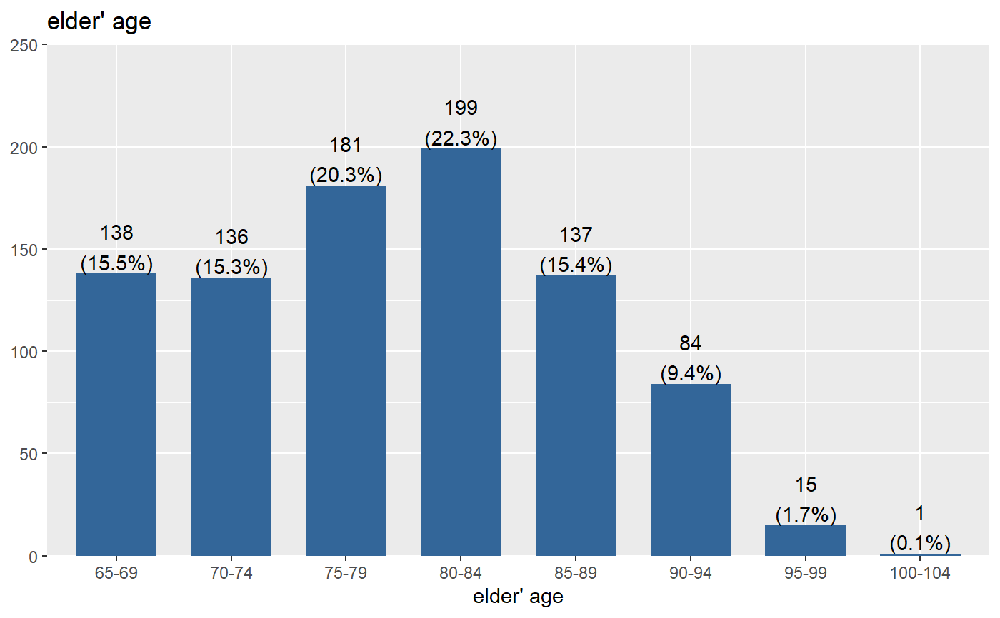
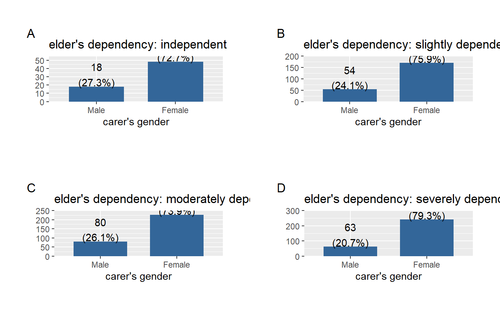
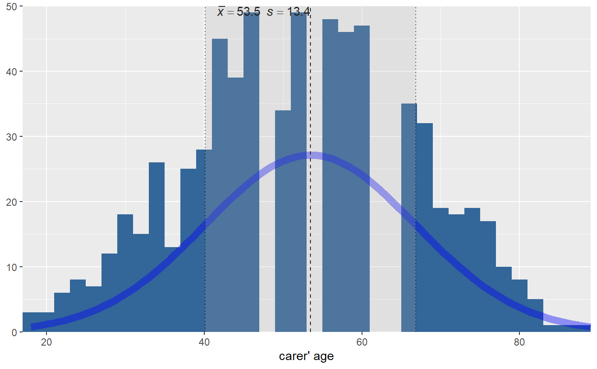

Plot frequencies of variables
plot_frq.RdPlot frequencies of a variable as bar graph, histogram, box plot etc.
plot_frq(data, ..., title = "", weight.by = NULL, title.wtd.suffix = NULL, sort.frq = c("none", "asc", "desc"), type = c("bar", "dot", "histogram", "line", "density", "boxplot", "violin"), geom.size = NULL, geom.colors = "#336699", errorbar.color = "darkred", axis.title = NULL, axis.labels = NULL, xlim = NULL, ylim = NULL, wrap.title = 50, wrap.labels = 20, grid.breaks = NULL, expand.grid = FALSE, show.values = TRUE, show.n = TRUE, show.prc = TRUE, show.axis.values = TRUE, show.ci = FALSE, show.na = FALSE, show.mean = FALSE, show.mean.val = TRUE, show.sd = TRUE, drop.empty = TRUE, mean.line.type = 2, mean.line.size = 0.5, inner.box.width = 0.15, inner.box.dotsize = 3, normal.curve = FALSE, normal.curve.color = "red", normal.curve.size = 0.8, normal.curve.alpha = 0.4, auto.group = NULL, coord.flip = FALSE, vjust = "bottom", hjust = "center", y.offset = NULL)
Arguments
| data | A data frame, or a grouped data frame. |
|---|---|
| ... | Optional, unquoted names of variables that should be selected for
further processing. Required, if |
| title | Character vector, used as plot title. By default,
|
| weight.by | Vector of weights that will be applied to weight all cases.
Must be a vector of same length as the input vector. Default is
|
| title.wtd.suffix | Suffix (as string) for the title, if |
| sort.frq | Determines whether categories should be sorted
according to their frequencies or not. Default is |
| type | Specifies the plot type. May be abbreviated.
|
| geom.size | size resp. width of the geoms (bar width, line thickness or point size, depending on plot type and function). Note that bar and bin widths mostly need smaller values than dot sizes. |
| geom.colors | User defined color for geoms, e.g. |
| errorbar.color | Color of confidence interval bars (error bars).
Only applies to |
| axis.title | Character vector of length one or two (depending on
the plot function and type), used as title(s) for the x and y axis.
If not specified, a default labelling is chosen.
Note: Some plot types do not support this argument. In such
cases, use the return value and add axis titles manually with
|
| axis.labels | character vector with labels used as axis labels. Optional argument, since in most cases, axis labels are set automatically. |
| xlim | Numeric vector of length two, defining lower and upper axis limits
of the x scale. By default, this argument is set to |
| ylim | numeric vector of length two, defining lower and upper axis limits
of the y scale. By default, this argument is set to |
| wrap.title | Numeric, determines how many chars of the plot title are displayed in one line and when a line break is inserted. |
| wrap.labels | numeric, determines how many chars of the value, variable or axis labels are displayed in one line and when a line break is inserted. |
| grid.breaks | numeric; sets the distance between breaks for the axis,
i.e. at every |
| expand.grid | logical, if |
| show.values | Logical, whether values should be plotted or not. |
| show.n | logical, if |
| show.prc | logical, if |
| show.axis.values | logical, whether category, count or percentage values for the axis should be printed or not. |
| show.ci | Logical, if |
| show.na | logical, if |
| show.mean | Logical, if |
| show.mean.val | Logical, if |
| show.sd | Logical, if |
| drop.empty | Logical, if |
| mean.line.type | Numeric value, indicating the linetype of the mean
intercept line. Only applies to histogram-charts and
when |
| mean.line.size | Numeric, size of the mean intercept line. Only
applies to histogram-charts and when |
| inner.box.width | width of the inner box plot that is plotted inside of violin plots. Only applies
if |
| inner.box.dotsize | size of mean dot insie a violin or box plot. Applies only
when |
| normal.curve | Logical, if |
| normal.curve.color | Color of the normal curve line. Only
applies if |
| normal.curve.size | Numeric, size of the normal curve line. Only
applies if |
| normal.curve.alpha | Transparancy level (alpha value) of the normal curve. Only
applies if |
| auto.group | numeric value, indicating the minimum amount of unique values
in the count variable, at which automatic grouping into smaller units
is done (see |
| coord.flip | logical, if |
| vjust | character vector, indicating the vertical position of value
labels. Allowed are same values as for |
| hjust | character vector, indicating the horizontal position of value
labels. Allowed are same values as for |
| y.offset | numeric, offset for text labels when their alignment is adjusted
to the top/bottom of the geom (see |
Value
A ggplot-object.
Note
This function only works with variables with integer values (or numeric factor levels), i.e. scales / centered variables with fractional part may result in unexpected behaviour.
Examples
#> #>#> #> #>#> #> #>#> #> #>plot_frq(efc$tot_sc_e)# boxplot plot_frq(efc$e17age, type = "box")# histogram, pipe-workflow efc %>% dplyr::select(e17age, c160age) %>% plot_frq(type = "hist", show.mean = TRUE)#> [[1]]#> #> [[2]]#># bar plot(s) plot_frq(efc, e42dep, c172code)#> [[1]]#> #> [[2]]#># grouped data frame, all panels in one plot efc %>% group_by(e42dep) %>% plot_frq(c161sex) %>% plot_grid()#> Warning: Not enough tags labels in list. Using letters instead.library(sjmisc) # grouped variable ageGrp <- group_var(efc$e17age) ageGrpLab <- group_labels(efc$e17age) plot_frq(ageGrp, title = get_label(efc$e17age), axis.labels = ageGrpLab)# plotting confidence intervals. expand grid and v/hjust for text labels plot_frq( efc$e15relat, type = "dot", show.ci = TRUE, sort.frq = "desc", coord.flip = TRUE, expand.grid = TRUE, vjust = "bottom", hjust = "left" )# histogram with overlayed normal curve plot_frq(efc$c160age, type = "h", show.mean = TRUE, show.mean.val = TRUE, normal.curve = TRUE, show.sd = TRUE, normal.curve.color = "blue", normal.curve.size = 3, ylim = c(0,50))#> Warning: Removed 4 rows containing missing values (geom_bar).